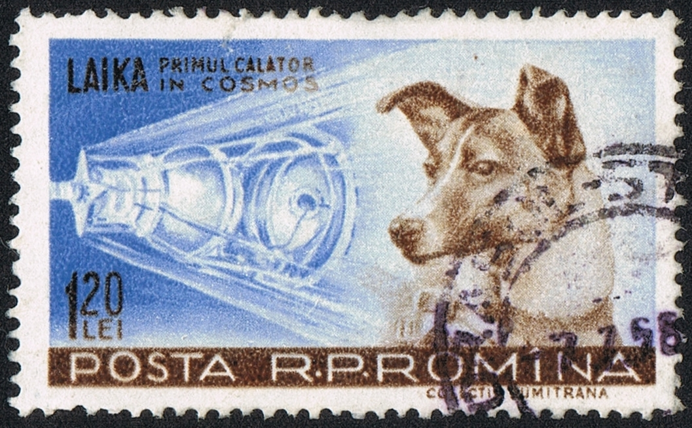

Запуск собак в космос

Лайка стала первым животным, выведенным на орбиту Земли. Была запущена в космос 3 ноября 1957 года на советском корабле «Спутник-2» с нового космодрома Тюратам (Байконур). На тот момент Лайке было около двух лет, весила она около 6 килограммов. Возвращение Лайки на Землю было ещё технически невозможно. Предполагалось, что собака проживёт около недели, на этот срок заправили кормушку, добавив в последнюю порцию дозу яда, чтобы избавить собаку от мучений. Но при выходе корабля на орбиту вышла из строя система вентиляции и собака погибла через 5—7 часов после старта от стресса и перегрева
Белка и Стрелка
19 августа 1960 года собаки Белка и Стрелка стали первыми живыми существами, совершившими суточный орбитальный полёт и благополучно вернувшимися обратно. За это время корабль совершил 17 полных оборотов вокруг Земли. Через некоторое время после приземления Стрелка принесла здоровое потомство — шесть щенков, один из которых был отправлен в подарок жене президента США Джона Кеннеди Жаклин и их дочери Кэролайн.